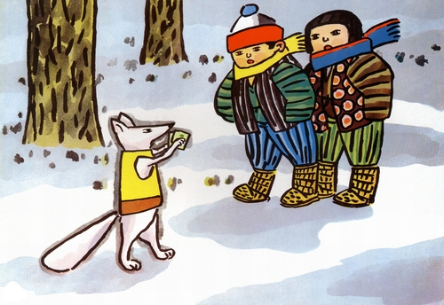
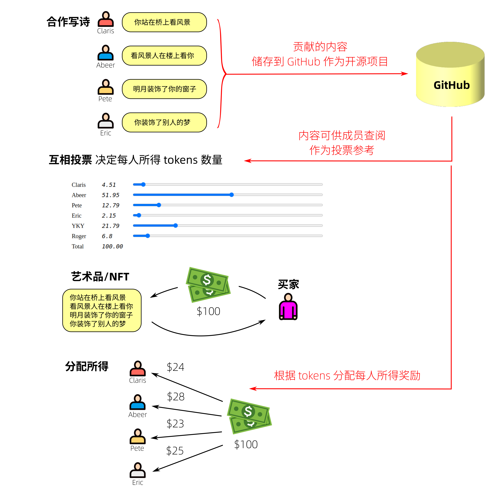
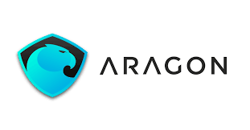
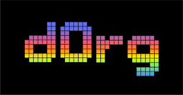
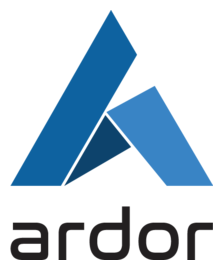
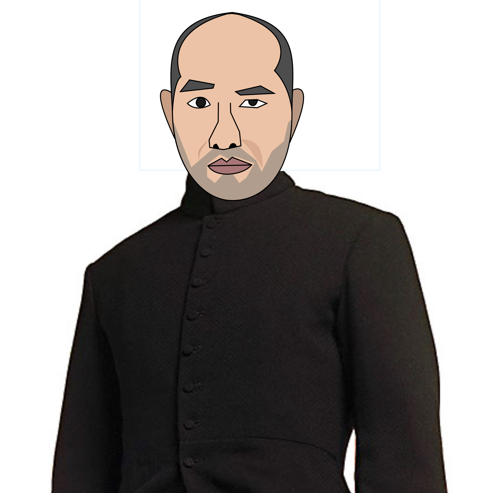

渡过雪原 — 商业计划书
（这是商业计划书，也是网页，也是 GitHub 项目，是由团队共同制作的）
目录
执行择要
《渡过雪原》是一个去中心化项目合作平台，让一班没有阶级划分的成员们自主地研发一个项目，特点是透过加权投票分配项目所得的利润给每位成员。
《渡过雪原》名字由来
《渡过雪原》是日本家传户晓的作家 宫泽贤治 (Kenji Miyazawa) 在 1921年 写的童话故事。 两兄妹在雪地上遇到小狐狸，牠请他们吃玉米团。「难道狐狸会骗人是假的？」，狐狸解释说那是谣传。 他们约好一起看幻灯片《不得喝酒》、《小心圈套》和《小心火焰》。 兄妹如期赴约，他们享受了美味的年糕和玉米团，看幻灯片。 穿着燕尾服的小狐狸致辞说： 牠们以后会以行动改变人类对牠们的误解。 晚会后，他们愉快地告别。

我们的《渡过雪原》宗旨是让全世界人类不分种族、建立无国界公司合作。
用法
举例：4人合作写一首诗：

Project Graph 工作表 让大家方便看到需要做的和已完成的工作，将复杂的项目分解为简单的工序：

Git UI 可以方便查看每一个工序的成员贡献，甚至新加入者也可以快速了解项目的进程：
投票界面 自动将总数调整至 100%：
用户痛点
自从 二战以来，美国成为世界霸权，高科技企业主要被 Anglo-American 公司垄断。
美国 是全球最先进的国家，但它同时是种族歧视的落后国家。 在美国，思想最前卫的人支持种族平等，但实际上 美国支配下的全球科技经济 仍存在 institutionalized racial bias. 顶尖的 AI 公司例如 Google, DeepMind, OpenAI 都是基于英/美的公司，他们的公司「宪法」并没有将种族平等写进去，而只是在已有的权力架构下「保障」员工不受歧视而已。
（我的一个印度朋友告诉我）科技界流行的 Conway's Law 说： 一个组织 设计的 系统，会复制 该组织的通讯结构 (Any organization that designs a system will produce a design whose structure is a copy of the organization's communication structure.) 换句话说，只有先进的组织才可以生产先进的技术，落后的组织方式生产落后的技术。
例如强人工智能，我认识很多有志于 AGI 的国内研究者 不得不接受现实 而放弃 AGI 的研究，因为中国未能发展健康的学术研究生态环境。 国内的学术和科技环境「内捲」，资源集中在少数人手上，导致对创造力的扼杀、和技术水平的停滞不前。 很多中国人、香港人 经常埋怨他们国家多么老土，其实他们自己也是老土的传播者。
而就算在世界大范围，很多科技不算落后的国家 例如 欧洲、日本、俄罗斯、等 也无法创立 领先的科技公司，例如人工智能方面。
香港作为世界经济金融中心，也是国家面向国际的一个窗口，所以香港很适合建立无国界公司，为中国人的科技发展带来出路。
市场分析
《渡过雪原》可以用来发展任何高科技产品，也包括与我们时代并进的艺术作品（例如 动画、游戏、文艺、元宇宙） 或 社会协作 (social cooperatives，例如 农业、医疗、落后地区、老人、教育、幼儿 等项目）。
大家可能怀疑，艺术需不需要用那么多高科技？ 然自从 Andy Warhol 用影印机 制作 玛莉连梦露 的画像，科技也变成艺术的一部分。 在后现代世界，「作者」和「观众」的分界变模糊了，例如我们玩游戏的同时，也决定游戏故事的发展。 不管我们情愿或不情愿，我们已经是《鱿鱼游戏》或《Hunter Games》的参与者和作者。
竞争者
简单介绍 竞争者.....



强调《渡过雪原》的特点是 clusters 的组织形式，与及 奖励分配的计算方法。
商业模式
类似 KickStarter 的合作平台
运营现状
现时仍处于 prototype 阶段，但我们已在使用《渡过雪原》作为开发《渡过雪原》的工具 (bootstrapping).
团队
This is Alvin (路立安), a highly adaptive and result-oriented person with a growth mindset and problem-solving skills, have more than 10 years of business and partnership development experience in various fast-paced environments and startup teams, always focusing on strategically growing the business and building better teamwork for the company, and well experienced in
- Business, Partnership, Channel, and Affiliate Development
- Consultative Selling and Sales Management
- Go-To-Market Strategy Planning
- From 0 to 1, build projects from scratch
I never get tired of learning cutting-edge technology and new stuff like web3, metaverse, blockchain, AI, and ESG, people in these industries focus on growing the whole industry and providing a better living standard for mankind
LinkedIn profile:
https://www.linkedin.com/in/alvin-lu-lap-on/

YKY (甄景贤), independent AGI researcher from Hong Kong. I want to live forever, which is why I devote my life to researching strong AI and to advocate for the movement known as Transhumanism. I am also a strong advocate for racial equality and global egalitarianism. I have dreamed of distributive organizations since the 1990's, at a time when BitCoin had not been born yet. I remember reading the e-mails of Wei Dai (戴唯), the creator of B-Money, a precursor of BitCoin. I saw the beginning of Aragon, when they had only a white paper, and I wondered whether it will ever be developed to be usable for a real company. There were many missing elements (such as the cluster structure, block chains, for-profit open-source software licenses, etc), but gradually they become available or the solution ideas occurred to me.
发展规划
《渡过雪原》本身是用来开发《渡过雪原》的工具，.....
融资
众筹
general.intelligence@gmail.com